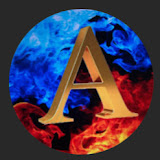
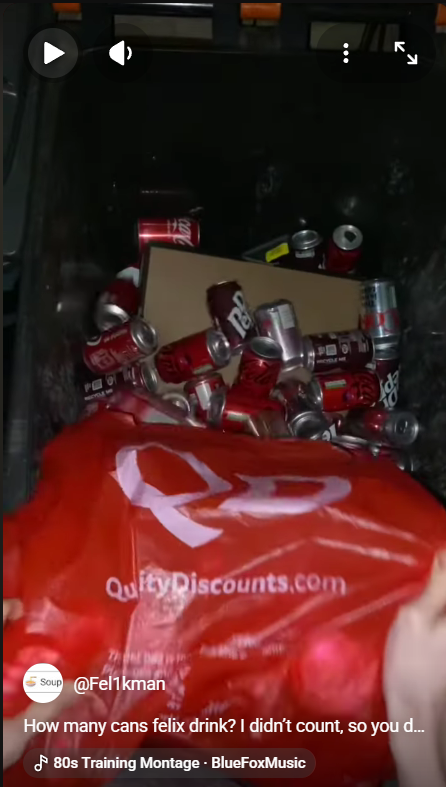
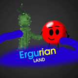
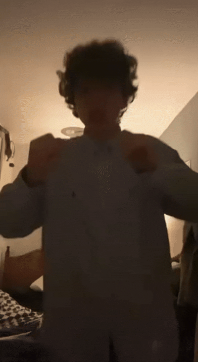
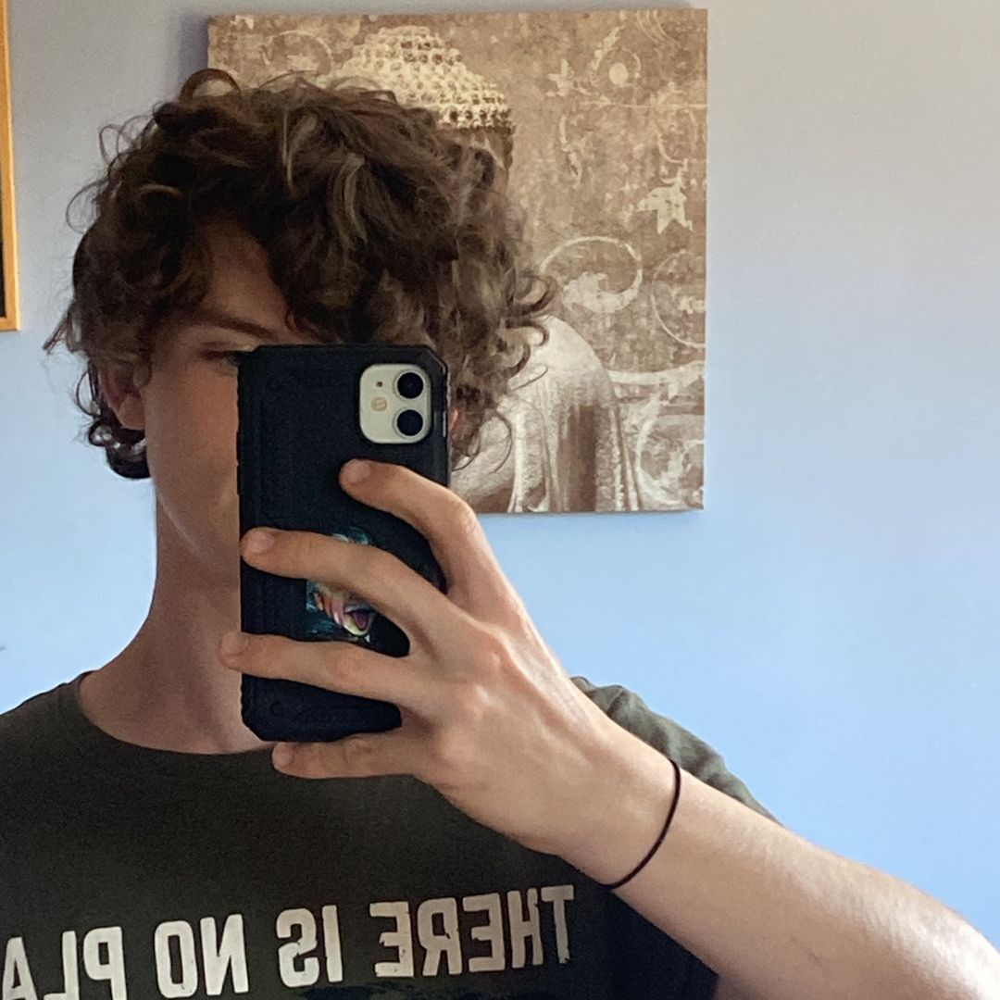
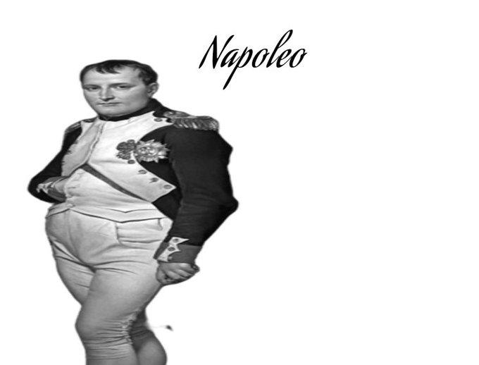
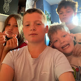
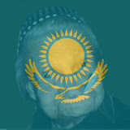

AriAriAD — Considered Felix’s “number 1 fan” according to him. Prevalent member of most of Fel1k’s streams and rooting for his return.



AriAriAD — Considered Felix’s “number 1 fan” according to him. Prevalent member of most of Fel1k’s streams and rooting for his return.
Alberto2 — (YT @Alberto2) Brother of CarloCarloCarlo1, known for starting the “Going (direction)” challenge. Carlo and Felix made the thumbnail for his “Going North” video. They were both also present in his starship robot video.
Buckaroo — A common nickname/catchphrase Felix gives to people when a playful tone is desired. Can also be styled as “Bucko”.
Buddy boy — Refers to a partner or close companion, typically used by Felix in a passive‑aggressive manner.
CarloCarloCarlo1 — (YT @CarloCarloCarlo1) Friend of Felix, developer of this website, cameraman, and brother of Alberto2. Undoubtedly Fel1k’s No. 1 viewer, with AriAri being number one only due to Carlo having a pre‑existing friendship with Felix.
CarloFelixMajorLeaugeGaming — A joint channel owned by Carlo and Felix. Felix appears in most videos while Carlo handles production. Uploading rhythm games and other random content. This is the oldest of Felix’s channels, though the oldest content is deleted.
Choo Choo plane — Felix’s humorous nickname for a plane, stemming from “Choo Choo train”, except for a plane.
DaFudge?!Felix! — A channel whose name and profile mimic Georgian creator DaFuq!?Boom! (now “skibidi”). Used for videos never uploaded to Fel1kMan or currently unlisted after initial upload.
Devil platform — Felix’s nickname for TikTok. He is publicly a sworn YouTube Shorts connoisseur.

Diet Coke — Felix buys 24‑packs of Diet Coke (and other fizzy drinks) priced £6.50–£8.50. His family, friends, and fans urge him to drink water (e.g. Push‑up 200). To this day it is the greatest money sink of Felix’s puny wealth.

Ergurian Land — (Handle @ErgurianLand2661) A viewer mentioned in “Walking west (with pushups)”. Felix is also friends with him on Roblox, with both being fans of each other’s videos.
Epic sauce — Comes from “awesome sauce”, replacing “awesome” with “epic”. One of Felix’s utmost favourite compliments.
Fel1k — (Handle @Fel1kMan) The main online username used by Felix Willmott. Most notoriously YouTube. (Pronounced “Fell‑ick man”).

Felix W D Willmott — A creator based out of Bedford, and the man behind it all.

Fel1k0 — Felix’s TikTok account, long since retired(?). The vast majority of fans come from Felix’s school.
Flippy Flop — A term from JackSucksAtLife’s channel Pretty Woman Kitchen. Felix uses “catch you on the flippy flop” as a way to say goodbye.
“I say bye bye” — Felix’s signature goodbye.
“Imma go bed now” — Despite commonly saying this, Felix usually does NOT go to bed. It usually signals Felix has reached the optimal loss of brain capacity to watch YouTube Shorts.
Joe Caine — (Handle @JoeIsThe_Caine) An editor known for country vs. country battles. A good friend of Felix, his main manager, and a co‑resident of the UK.
Jiggle — Absolute FAVOURITE nickname for Felix’s brother. His real name is unknown… (Julien).
MagicNeverAgain — (Previously MagicEveryFudgingDay) A side channel once owned by Felix, uploading daily “magic” content and slowly developing a comprehensive lore with Felix as the first antagonist. Now seemingly retired and used only by Felix’s brother.

Napoleo — A meme Felix used as his WhatsApp profile picture, its popularity mainly stemming from Matt Rose. It has now been replaced, but remains a proud part of the Fel1k community.
No problemo — The most notorious example of Felix adding “o” to words to add his signature flair.
“Oh my golly days” — Felix’s sillier version of “Oh my days”. Always used positively.
“Oh snap” — Felix uses this when he is impressed and/or giving praise.
“POOPY” — Felix’s ULTIMATE way of signifying mistakes, and the pinnacle of frustration shown by Felix.
P*pcorn b*ckets — Felix INTENSELY dislikes popcorn buckets due to their texture, shape, and advertising. Mentioning this object should be avoided.
Push‑up 25 — An exercise series by Felix from Feb 2025 to Jan 2026, and what started Felix’s streaming era.
Red Void — A subject in a video on the Fel1kMan YouTube channel with little to no context, giving a recipe to escape said phenomenon.
Strange — A recurring viewer from Wales who appeared in Felix’s finale streams. First person to (try to) donate to Felix before discovering Felix is ineligible for YouTube monetisation.
The unbothered Felix (TUF) — A state that overcomes Felix at random times, causing him to not want to do simple tasks because he is “unbothered”. This state causes large amounts of frustration to others.
The PLAY play — A theatre production based on the Polish company PLAY, composed of two plays. Felix was the narrator in both productions, being the sole narrator in PLAY play 2.

The bros — (@TheBros-p4k) A YouTuber group starring Felix’s brother and his friend. Felix appeared in their Hide and Seek video (unconsensually).

WhyIsYesterdayTomorrow — An editor known for country edits and vs battles. Both are friends and fans of each other. He is also Joe Caine’s friendly rival. His former display name was “Yestermorrow”, changed due to confusion, but still used as a nickname.
“Yoop” — A word that, at some point, autocorrected from many words on Felix’s phone. Eventually only “and” corrected to it. This was remedied half a year ago.
This website was made by Carlo (CarloCarloCarlo1)
This website is for educational and entertainment purposes only and should not be taken seriously or personally.